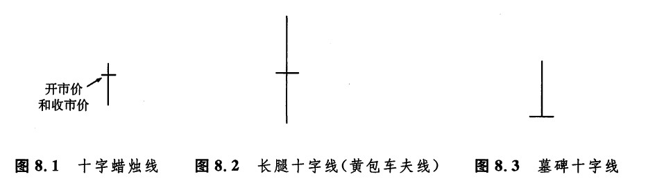

“突如其来的危险”
正如第三章所介绍，十字线是一类特别的蜡烛线，其开市价与收市价处在同一个水平上。从图8.1到图8.3显示的是十字蜡烛线的各种例子。因为十字线是一种极其重要的反转信号，所以我们专门辟出这一章来对其进行研究。在过去的各章中，我们已经看到十字线作为一些蜡烛线形态的组成部分所发挥的重要力量。这类形态包括十字星形态（参见第五章），以及十字孕线形态（参见第六章）。

下一篇：十字线的重要性 上一篇：分手蜡烛线形态
返回主页
copyright @ 2018 制作：汉钛电线，Hingtak Wire & Cable LLC